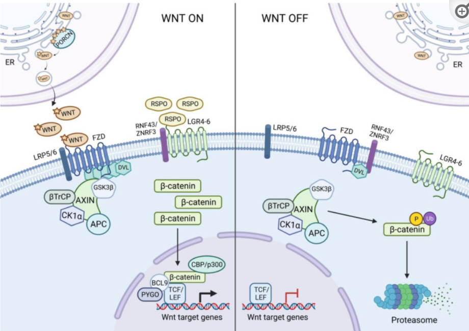

Publications
2022
- The multidimensional role of the Wnt/β-catenin signaling pathway in human malignanciesIshita S Hiremath, Arul Goel, Sudha Warrier, and 3 more authorsJournal of Cellular Physiology 2022
Several signaling pathways have been identified as important for developmental processes. One of such important cascades is the Wnt/β-catenin signaling pathway, which can regulate various physiological processes such as embryonic development, tissue homeostasis, and tissue regeneration; while its dysregulation is implicated in several pathological conditions especially cancers. Interestingly, deregulation of the Wnt/β-catenin pathway has been reported to be closely associated with initiation, progression, metastasis, maintenance of cancer stem cells, and drug resistance in human malignancies. Moreover, several genetic and experimental models support the inhibition of the Wnt/β-catenin pathway to answer the key issues related to cancer development. The present review focuses on different regulators of Wnt pathway and how distinct mutations, deletion, and amplification in these regulators could possibly play an essential role in the development of several cancers such as colorectal, melanoma, breast, lung, and leukemia. Additionally, we also provide insights on diverse classes of inhibitors of the Wnt/β-catenin pathway, which are currently in preclinical and clinical trial against different cancers.
@article{hiremath2022multidimensional, title = {The multidimensional role of the Wnt/$\beta$-catenin signaling pathway in human malignancies}, teaser = {Pub1.png}, author = {Hiremath, Ishita S and Goel, Arul and Warrier, Sudha and Kumar, Alan Prem and Sethi, Gautam and Garg, Manoj}, journal = {Journal of Cellular Physiology}, volume = {237}, number = {1}, pages = {199--238}, year = {2022}, publisher = {Wiley Online Library} }